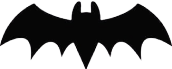

hello
Halloween’s history goes back over 2,000 years to the ancient Celtic festival of Samhain, observed on October 31. For the Celts, who lived in what is now Ireland, the United Kingdom, and parts of northern France, Samhain marked the end of the harvest season and the start of winter, a time associated with death. They believed that on this night, the boundary between the living and the dead blurred, allowing spirits to roam the earth. People lit large bonfires to ward off malevolent spirits and wore costumes, often made of animal skins, to disguise themselves from wandering ghosts.
In the 8th century, as Christianity spread, Pope Gregory III designated November 1 as All Saints' Day, or All Hallows' Day, to honor saints and martyrs, likely aiming to replace or overshadow the pagan festival. The night before, known as All Hallows' Eve, gradually merged with local traditions, eventually becoming Halloween That we all know and enjoy celebrating
Irish and Scottish immigrants brought Halloween customs to North America in the 19th century, the holiday transformed into a more secular and community-centered event. Traditions like trick-or-treating, costume parties, and pumpkin carving emerged and spread. Today, Halloween combines elements of both its ancient origins and modern creativity, celebrated with costumes, decorations, and community gatherings.
since Halloween’s has been around for more than a thousand years. Originally a religious observance, it became increasingly secular over the centuries until its religious trappings all but disappeared. Today Halloween is considered a holiday for dress-up and fun, especially for children.
Halloween’s origins can be traced back to the ancient Celtic festival known as Samhain, which was held on November 1 in contemporary calendars. It was believed that on that day, the souls of the dead returned to their homes, so people dressed in costumes and lit bonfires to ward off spirits. In this way, popular Halloween tropes such as witches, ghosts, and goblins became associated with the holiday.
The origins of Halloween, explained. History of Halloween. Halloween has roots in the ancient Celtic festival of Samhain. (October 31, All Saints' Day, All Hallows' Eve, All Souls' Day, trick-or-treating, pumpkin carving, turnip, harvest festival) Encyclopædia Britannica, Inc. In the 7th century CE, Pope Boniface IV created All Saints Day, originally celebrated on May 13. A century later, Pope Gregory III moved the holiday to November 1, likely as a Christian substitute for the pagan festival of Samhain. The day before the saintly celebration became known as All Hallows Eve, or Halloween.